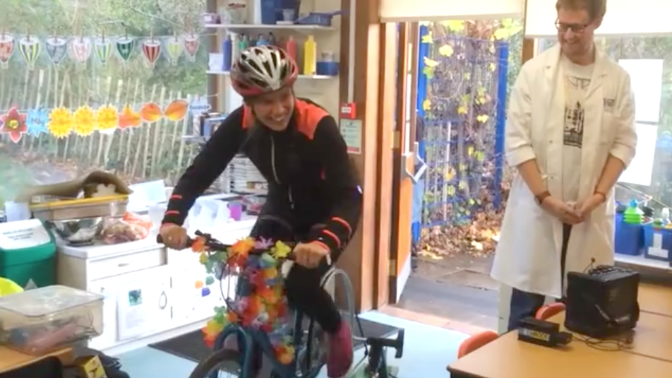
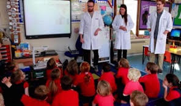

I like to talk about my work to a variety of audiences. If you’d like me to speak at your event, please email me at 
The slides for some of my talks can be found here.
Public talks and outreach
 
My work as a materials scientist Girls in Physics series, London (UK), April 2019
Saving the world with Quantum Mechanics Gunmaker’s Arms, Birmingham (UK), July 2017
Renewable energy workshop St Saviour’s School, Bath (UK), March 2016 Video here
What the Quanta? Ort Cafe, Birmingham (UK), July 2014
Mathematical problems, puzzles and proofs Ort Cafe, Birmingham (UK), April 2014
Academic workshops and presentations
[talk] Charge carrier mobility in hybrid halide perovskites Department of Materials Student Research Day, ICL, London (UK), March 2019
[talk] Distortions and Defects in hybrid halide perovskites Thomas Young Centre Student Day, UCL, London (UK), February 2019 Presentation here
[talk] Publishing your Software Project with the Journal of Open Source Software Imperial College Research Software in Materials event, London (UK), January 2019 Presentation here
[poster] Sustainable software development with Python Centre for Doctoral Training in New and Sustainable Photovoltaics showcase, Liverpool (UK), November 2018
[workshop] Feed your Python with Pandas Imperial College Research Computing week, ICL, London (UK), September 2018
[talk] H-centre and V-centre defects in hybrid halide perovskites Gordon Research Seminar: Utilizing and Mitigating Defects in Emerging Functional Materials, New Hampshire (USA), August 2018
[talk] Doping and Defects in hybrid halide perovskites Centre for Plastic Electronics meeting, ICL, London (UK), August 2018
[talk] Breaking periodicity: vibrations of defects in photovoltaic materials CECAM Anharmonicity and thermal properties of solids, Paris (France), January 2018
[poster] H-centre and V-centre defects in hybrid halide perovskites Royal Society of Chemistry solid state group meeting, Loughborough (UK), December 2017
[talk] H-centre and V-centre defects in hybrid halide perovskites Centre for Doctoral Training in New and Sustainable Photovoltaics showcase, Liverpool (UK), November 2017
[talk] Anharmonic lattice vibrations in halide perovskites: heat transport, vacancy formation, and non-radiative recombination International Conference on Perovskite Solar Cells and Optoelectronics, Oxford (UK), September 2017
[workshop] Feed your Python with Pandas Walsh Materials Design group research day, Bath (UK), July 2017
[poster] Hot hybrid perovskites: computational modelling of lattice vibrations in CH3NH3PbI3 International Conference of Women in Physics, Birmingham (UK), July 2017
[talk] Electrons and phonons in hybrid halide perovskites As part of the seminar Emerging materials for solar energy, delivered with my supervisor Aron Walsh and PhD student Dan Davies. Yonsei University, Seoul (Korea), April 2017
[poster] Solar minerology: earth-abundant semiconductors for photovoltaics Materials Research Society, Boston (USA), December 2016
[talk] Keeping the baby in the bathtub: Improvements upon two approximations commonly made when modelling CH3NH3PbI3 Centre for Doctoral Training in New and Sustainable Photovoltaics showcase, Liverpool (UK), November 2016
[poster] Effective mass and band gap deformation in photovoltaic materials CAMD summer school, Copenhagan (Denmark), August 2016